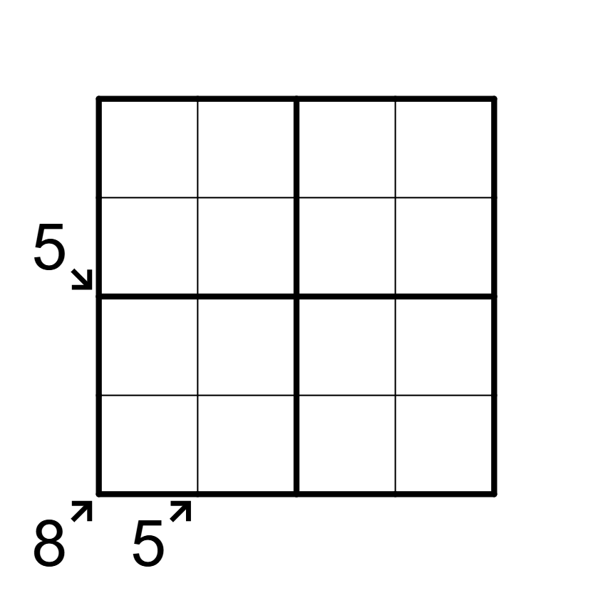

Microkiller - ⭐️

LINK
REGELS:
Standaard sudoku:
Plaats de cijfers van 1 t/m 4 eenmaal in elke rij, kolom, en 2x2 blok.
Little Killer:
Het getal bij een pijl buiten de puzzel is gelijk aan de som van de cijfers in de richting van de pijl.